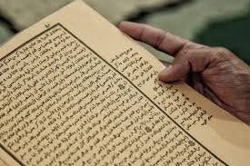
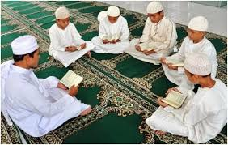
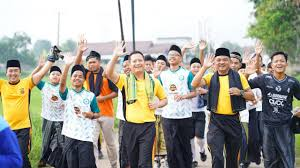
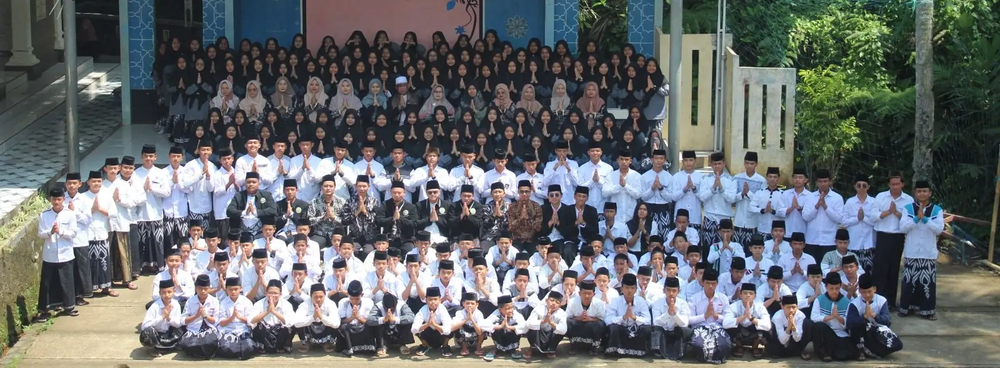

Kegiatan di Ponpes At-Thohiriyah

Kajian Kitab Kuning
Kegiatan rutin setiap pagi dan malam untuk memperdalam ilmu agama dari kitab-kitab klasik.

Tahfidz Al-Qur'an
Program khusus untuk santri yang ingin menghafal Al-Qur'an secara bertahap dan disiplin.

Olahraga Santri
Kegiatan fisik seperti sepak bola, voli, lari pagi dan senam untuk menjaga kesehatan jasmani.

Sekolah Formal
Sistem pendidikan yang terstruktur dan berjenjang, dengan kurikulum dan proses pembelajaran yang sistematis, serta diselenggarakan di lembaga pendidikan yang terakreditasi oleh pemerintah.